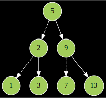

Implement a binary search tree.
I would like you all to collaborate on these projects in small teams. Teams must have 3 – 4 people. As usual:
As usual, there is a skeleton file (which should compile) that you should complete. All the functions you have to write are labeled with TODO. A few remarks are in order:
remove, please perform the operation by placing the successor at the location of the removed node when handling the case of a node with two children. It’s obviously not the only correct way to do it, but it will let you check your output against mine.operator= suggests you use the technique of letting the copy constructor do all the work and then stealing its result. Review our vector code from lecture if you need a reminder.This is easy:
Note: use make -B [debug] to force recompilation when switching from a normal build to debug (or vice versa).
This is maybe easy. The main program reads commands from stdin and modifies a single binary search tree of unsigned long integers. To see how to use it, run ./main --help. I’ve also prepared some test files for you. Some examples that might be of interest:
Make a tiny tree and draw it:
Then you’ll have the following svg in that /tmp/trees-XXXXXX/ directory:

NOTE: the above assumes you have graphviz. It’s on the virtual machine for my 103 course, but also available from just about any Linux distribution’s official repositories. Highly recommended. Also note that you of course have to have written insert and postorder for this much to work, but both are pretty easy. Lastly note that ./main without -c should generally work fine even if you don’t have a valid copy constructor or assignment operator.
It might also be useful to make a file of commands that builds a specific tree. To make a random tree with values 1-20:
You could then build the tree and print some statistics like this:
$ echo S l m M h | cat /tmp/input - | ./main
#nodes == 20
#leaves == 7
min(T) == 1
max(T) == 20
height == 5And if you wanted to use that tree as a starting point, but enter further commands interactively:
$ cat /tmp/input - | ./main
p
11 7 6 5 2 1 4 3 9 8 10 20 15 12 13 14 19 16 18 17
s 99
99 was not in the tree.
s 15
15 was in the tree.Again, see the output of ./main --help for a list of the commands.
There’s also a -c option to help you test the copy constructor and assignment operator. It just makes a random-ish tree, copies it via the various means available, and prints the resulting trees in preorder. The first test is whether or not ./main -c crashed. Barring seg faults and the like, you could then examine the output and make sure each tree had the same contents. Lazy and somewhat imprecise method: run the following and make sure output is 1:
You can find the output of my solution for each file in test-input/ in the directory test-input/reference-output/. If you just want to see if you got the same answers as I did:
Alternatively, you could sha1sum them, etc. I’ll leave writing a test script as a simple exercise for you.
If you have a seg fault or similar runtime error, perhaps consider running make -B debug and letting gdb give you a hand. If your program does not crash, but produces output that is inconsistent with mine, then you may want to examine the evolution of your tree after every insert / remove. For that, maybe try something like the following:
$ awk '{print $0} /^[ir]/ {print "d"}' test-input/insert | ./main
svg output written to /tmp/trees-XXXXXX/The SVG files will be numbered according to the index of the command, so if you open them in ascending order, you can watch your tree evolve. This ought to make debugging not too painful.
I plan on you writing most of these functions recursively.1 To facilitate the recursive approach, there are a bunch of functions that take node pointers, e.g.
You might be wondering why we don’t just use member functions of the tree? Well, recursion usually works by building a global solution out of solutions to smaller sub-problems. If using member functions, we are met with an annoying technical obstacle: the subtrees are defined just by pointers, not by things of type tree. So the natural sub-problems you want to solve aren’t quite of the same shape as the global one. Hence the existence of the functions with node pointer input. Most tree member functions will simply give their root pointer to the corresponding function that acts on nodes, e.g.:
Try writing insert and postorder, preorder, inorder before anything else. They’re not too difficult, and they let you start testing as soon as possible.
Think about using the traversal functions with clever inputs to solve some of the other problems. There’s a very natural solution for clear using postorder, for example. And if you think about it, you could also solve some of the statistics functions (e.g. leaves and size) using traversals.
In case you get bored, a few other things to try:
gcc is actually optimizing your recursion into loops. (You can get annotated assembly listings with the flags -S -fverbose-asm). Were there any functions that remained recursive after optimization?Just make sure your group is listed on Piazza before the deadline.
With -O2, gcc will usually optimize the recursive calls into loops, so there isn’t going to be much of a performance cost.↩︎